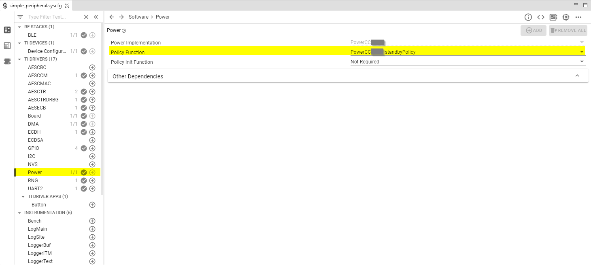

Power Management¶
All power-management functionality is handled by the TI power driver and are used by the peripheral drivers (e.g. UART, SPI, I2C, etc..). Applications can prevent, if they choose, the CC35xx from entering low power modes by setting a power constraint.
By default, all the examples in SimpleLink Wi-Fi SDK will put the CC35xx in standby mode if there is no task running. This is achieved by configuring the TI power driver and the kernel to do so, as shown in the following step.
In the
FreeRTOSConfig.h, set following define:#define configUSE_TICKLESS_IDLE 1This means we use a built-in FreeRTOS functionality to get the number of ticks until the next tasks need to be executed. Please refer to FreeRTOS Low Power Support. for more information.
When there is no task running within 2 ticks from the future, then the
vPortSuppressTicksAndSleep(TickType_t xExpectedIdleTime)will be called, which returns the number of ticks until next task occurs. The function can be found in{SDK_INSTALL_DIR}\kernel\freertos\dpl\PowerCCxxxx_freertos.cIn
vPortSuppressTicksAndSleep, we can see the tick is saved to a global variable and Power_idleFunc() gets called.1 2 3 4 5 6 7 8 9 10 11
void vPortSuppressTicksAndSleep(TickType_t xExpectedIdleTime) { /* Stash FreeRTOS' expected idle time */ PowerCCxxxx_idleTimeOS = xExpectedIdleTime; /* * call Power-driver-specified idle function, to conditionally invoke the * Power policy */ Power_idleFunc(); }
Power_idleFunctakes in policyFxn and policyFxn is defined using SysConfig tool Fig. 31. By default, TI sets thePowerCCxxxx_standbyPolicyas policyFxn.Power_idleFuncis defined in{SDK_INSTALL_DIR}\source\ti\drivers\power\PowerCCxxxx.candPowerCCxxxx_standbyPolicycan be found in{SDK_INSTALL_DIR}\kernel\freertos\dpl\PowerCCxxxx_freetos.c
Fig. 31 Configure Power Policy for Idle Function.
In the Sysconfig generated files, you will find the following example in ti_drivers_config.c.
1 2 3 4
const PowerCCXXXX_Config PowerCCxxxx_config = { .policyInitFxn = NULL, .policyFxn = PowerCCxxxx_standbyPolicy, };